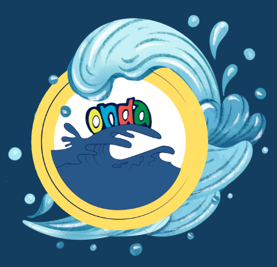
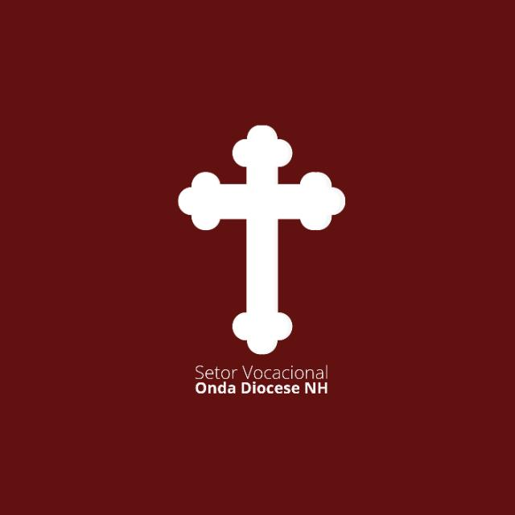
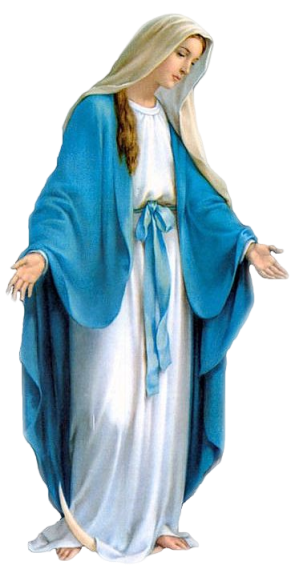
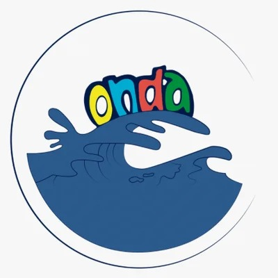
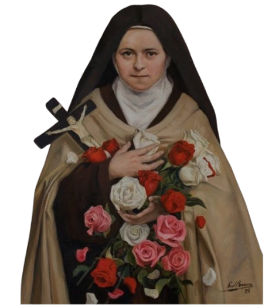
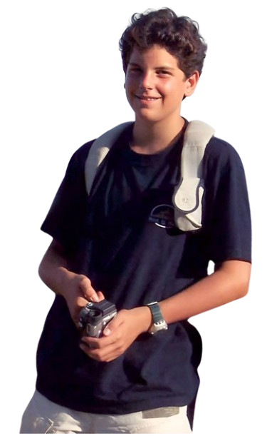

Encontros do setor vocacional 2026
Abaixo seguem os links de acesso a todos os encontros que o setor vocacional do ONDA da Feitoria organizou no ano de 2026:


Conheça o movimento católico ONDA
Abaixo seguem os links de acesso às redes sociais do movimento católico ONDA:
- O que é o ONDA?
- Instagram do ONDA da Feitoria
- Facebook do ONDA da Feitoria
- Instagram do ONDA diocese de NH
- Instagram do ONDA nacional

Conheça Josué Frauzino Vital de Souza, chefe do setor vocacional 2026 e desenvolvedor dessas páginas do vocacional
Abaixo seguem os links de acesso às redes sociais do chefe do setor vocacional em 2026 e desenvolvedor do linktree e das páginas dos encontros:
